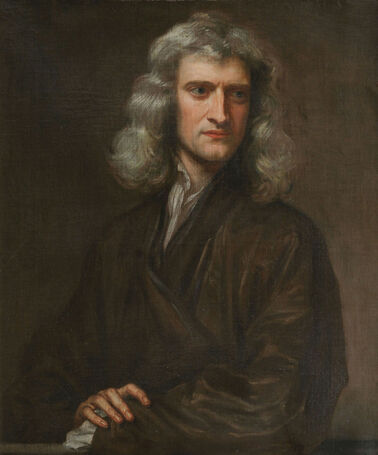

Исаак Ньютон
Исаак Ньютон (Isaac Newton) — один из величайших учёных в истории, чьи работы заложили основы классической физики. Хотя он не формулировал закон сохранения энергии в явном виде, его труды, особенно законы движения и закон всемирного тяготения, стали фундаментом для понимания сохранения импульса и энергии в механических системах.
Краткая биография Исаака Ньютона
Исаак Ньютон родился 4 января 1643 года в Вулсторпе, Англия. Его отец умер до его рождения, а мать вскоре вышла замуж повторно, оставив мальчика на попечение бабушки. Ньютон с детства проявлял интерес к механике и конструированию, создавая модели машин и устройств. В 1661 году Ньютон поступил в Тринити-колледж Кембриджского университета, где изучал математику, физику и философию. Во время эпидемии чумы в 1665–1667 годах он вернулся домой, и именно в этот период сделал свои самые важные открытия, включая основы дифференциального исчисления, теорию цвета и первые идеи о законе всемирного тяготения. В 1687 году Ньютон опубликовал главную работу своей жизни — «Математические начала натуральной философии» (Principia Mathematica), где сформулировал три закона движения и закон всемирного тяготения. Эти работы стали основой классической механики и заложили фундамент для понимания сохранения импульса. Ньютон также внёс значительный вклад в оптику, разработав теорию цвета и построив первый зеркальный телескоп. В 1703 году он был избран президентом Королевского общества, а в 1705 году получил рыцарское звание. Исаак Ньютон умер 31 марта 1727 года и был похоронен в Вестминстерском аббатстве с почестями, подобающими национальному герою.